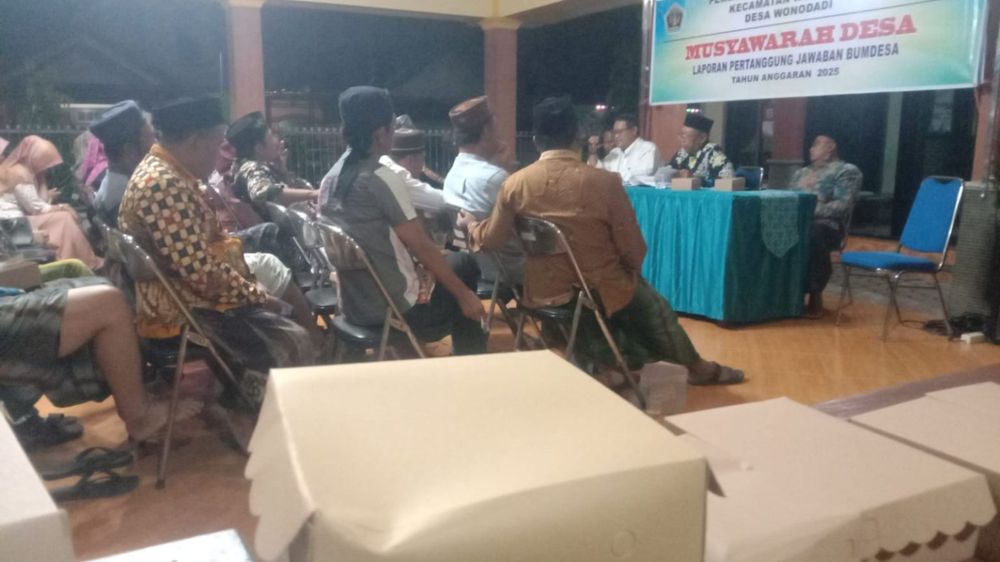
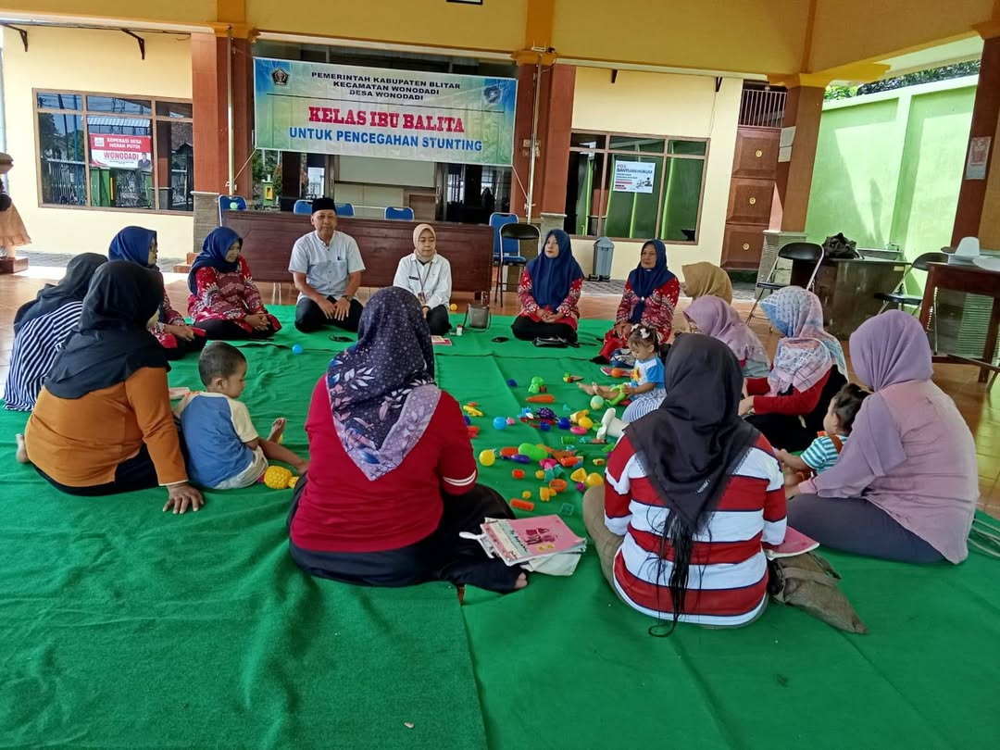
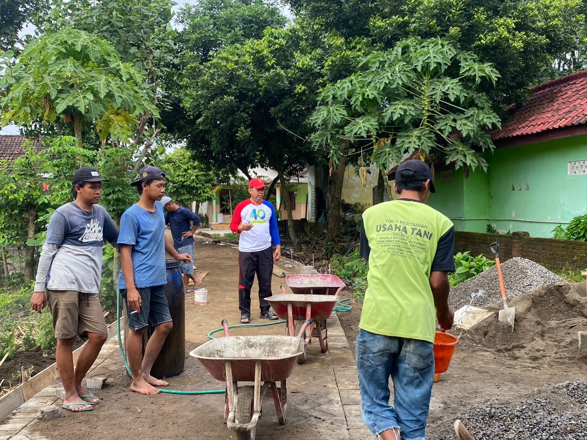

Berita dan Kegiatan Desa

Musdes LPJ BUMDesa 2025
12 Januari 2026
Pemerintah Desa Wonodadi melaksanakan Musyawarah Desa dalam rangka penyampaian laporan pertanggungjawaban BUMDesa tahun 2025. Kegiatan ini dihadiri oleh perangkat desa, BPD, tokoh masyarakat, dan perwakilan warga.

Kelas Ibu Balita
8 Januari 2026
Kegiatan kelas ibu balita rutin dilaksanakan untuk memberikan edukasi kepada para ibu mengenai kesehatan anak, gizi, dan pola asuh yang baik dalam mendukung tumbuh kembang balita.

Gotong Royong Kebersihan Lingkungan
3 Januari 2026
Warga Desa Wonodadi bersama perangkat desa melaksanakan kerja bakti membersihkan lingkungan sekitar jalan desa dan fasilitas umum sebagai upaya menjaga kebersihan dan kenyamanan bersama.